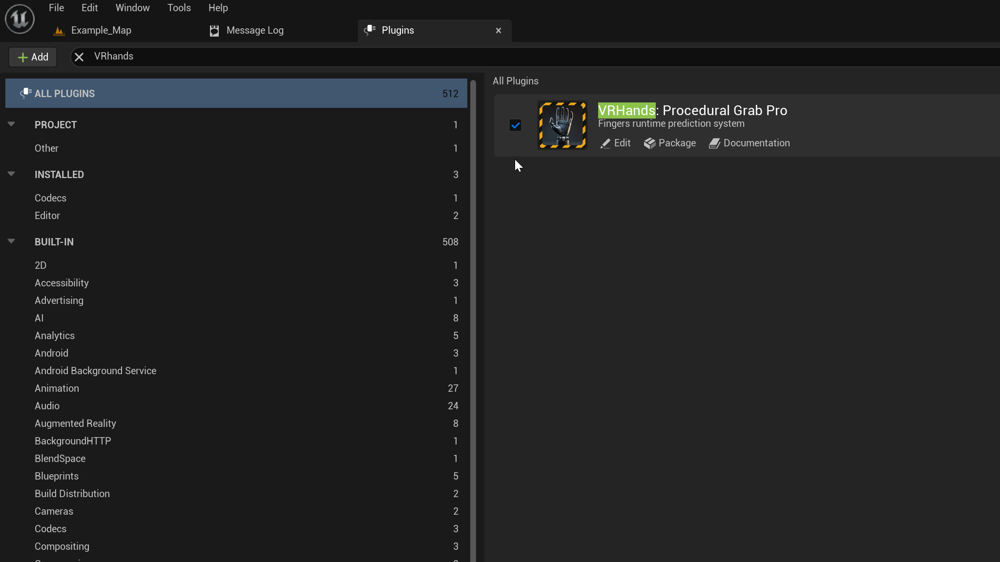

VR Hands Procedural Grab Pro Documentation
Quick Start Guide
Step 1 — Enable Plugin
Plugins → Enable Plugin

{kind=link}
Step 2 — Input Setup
- Move plugin's Input Folder
Plugins/VRHands:ProceduralGrabProContent/Input→ into your game project'sContentfolder.
This step is required
Any input context used by the Enhanced Input system must be placed inside your game's Content folder.
Plugin content is not packaged the same way and will not be discovered in packaged builds, which will cause inputs to stop working after packaging.
{kind=link}
Step 2.1 — For UE 5.2
- Search for PMI in Project Settings.
- Set Mappable Input Config For XR to
PMI_VRTemplateProcedural.
{kind=link}
Step 2.1 — For UE 5.3–5.6
- Search Project Settings for Input → Default Mapping Contexts.
- Add 3 array items and set:
IMC_ProcGrab_HandIMC_ProcGrab_Weapon_LeftIMC_ProcGrab_Weapon_Right
{kind=link}
Step 3 — Open Example Map
Open: Plugins/VRHands:ProceduralGrabProContent/Example_Map
{kind=link}
Setting Custom Hands Mesh
- Open BP_VRPawnProcedural.
- Select B_HandMesh_r component.
- Set enum Hand Mesh Visual Settings → Show Custom Hand and choose your right-hand skeletal mesh.
- Repeat for B_HandMesh_l to set the left hand.
{kind=link}
Get Human Hands — FREE (How to claim)

You can receive the Human Hands mesh pack for free by following these steps:
-
Rate the product on Fab
-
Write a few words (feedback) on the Fab Forum
-
Contact me to confirm: geektechcg@gmail.com
or send a direct message on the forum.
Don’t forget to include your forum username.
After confirmation, I’ll provide the download link for the Human Hands pack.
Troubleshooting & Tips
Input not detected in packaged game?
- Make sure the Input folder was moved into your game project's
Contentfolder (not left inside the plugin). - Check Project Settings → Input to ensure the mapping contexts are listed.
- Review Step 2 — Input Setup
Packaged standalone game (Android/Quest) crashed immediately when launched?
- Update Plugin To the latest version
-
Make sure your plugin’s .uplugin file includes Android in the Platform Allow List
-
Go to your plugin folder
- Open VRHandsProceduralGrab.uplugin in Notepad
- Add Android PlatformAllowList "PlatformAllowList": ["Win64", "Android"]
For more information check out the video below
Video: VR Hands Procedural Grab Pro: 4. Packaging for Quest 2, 3 (Android Devices)
Extra Files
⚙ Custom Gun Model
{kind=link}
Tutorial Video: https://www.youtube.com/watch?v=p5R9Bfr_tc0&feature=youtu.be
Custom Gun Model from the Tutorial Video with Detached Parts (.rar) Download
Original Gun Model by eNse7en on sketchfab
⚙ DefaultEngine.ini
UE 5.2 Download DefaultEngine.ini
UE 5.3 – 5.7 Download DefaultEngine.ini
Need Help?
Contact: GeekTech
Plugin listing / updates: https://www.fab.com/listings/0d7009c6-ad1b-41d0-96d0-56ae95e59653
Plugin is developed and maintained by GeekTech. Compatible with Unreal Engine 5.2 – 5.6.
Ready to supercharge your VR Project? Get VR Hands Procedural Grab Pro now!